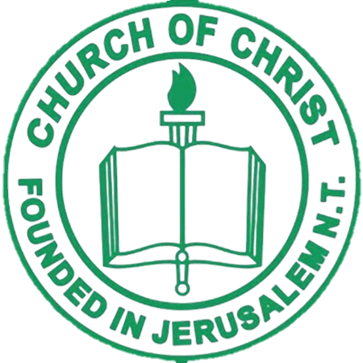
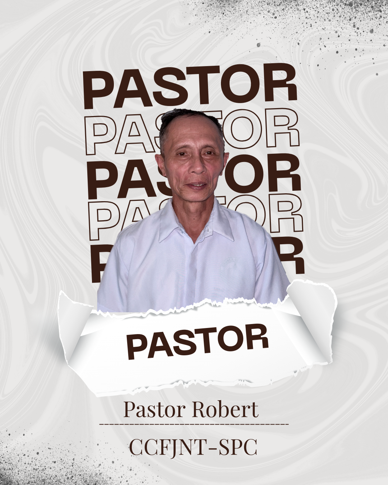

Welcome to Church of Christ Founded in Jerusalem New Testament San Pablo
Local Church

About SPC
Church of Christ Founded in Jerusalem New Testament San Pablo Local
Church (CCFJNT SPC) is a local congregation of the Church of Christ
Founded in Jerusalem New Testament (CCFJNT). Our mission is to spread
the teachings of Jesus Christ and serve our community with love and
compassion. CCFJNT SPC was established in San Pablo City to cater to the
spiritual needs of the local community. Over the years, we have grown in
faith and numbers, becoming a beacon of hope and faith in the area.
Church Activities
Weekly Bible Study - Every Thursday at 5:00 PM
Prayer Meetings - Quarterly - Thursday at 5:00 PM
Memory Verse every Sunday and Thursday
Youth Fellowship Events
Church Location History
San Gregorio San Pablo City- Cauguiran Residence
Poblacion 4 Alaminos Laguna - Mingua Residence
San Gabriel "Makokak" San Pablo City - Cauguiran Residence
Guadalupe 2 "Kaliwa Triangulo" San Pablo City - Boone Residence
San Miguel Alaminos Laguna - Biral Residence
Del Remedio San Pablo City - Cauguiran Residence
San Francisco "D.I. Calihan" San Pablo City - Catapang Residence
Palma I Alaminos Laguna - Delos Reyes Residence
San Miguel Alaminos Laguna - Mingua Residence
San Nicolas San Pablo City - Current Church Building
Images of Church Temporary Location
Members
Our church is proud to have a diverse and growing community of members
who are committed to living out the teachings of Christ. We welcome all
who seek spiritual growth and fellowship.
Pastors
Our pastors are dedicated to guiding our congregation in faith and
service. They provide spiritual leadership, counseling, and support to
our members.

Deacons
Our deacons play a vital role in the ministry of our church, assisting
in various capacities to ensure the smooth operation of our services.
Christian Youth Action (CYA)
The Christian Youth Action (CYA) is a vibrant ministry within our church
that focuses on nurturing the spiritual growth and leadership skills of
our youth. Through various activities, events, and service projects, CYA
provides a supportive environment for young members to develop their
faith and make a positive impact in their communities. There is
dedicated page for CYA Chairman.